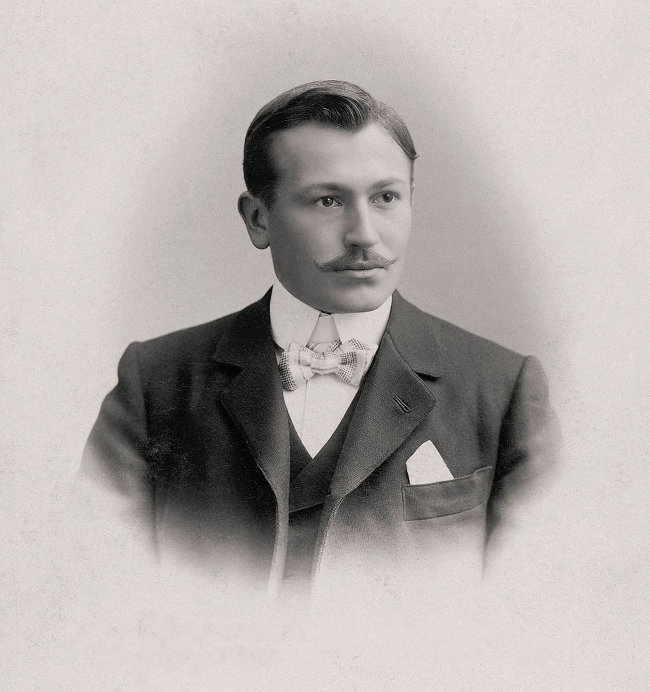
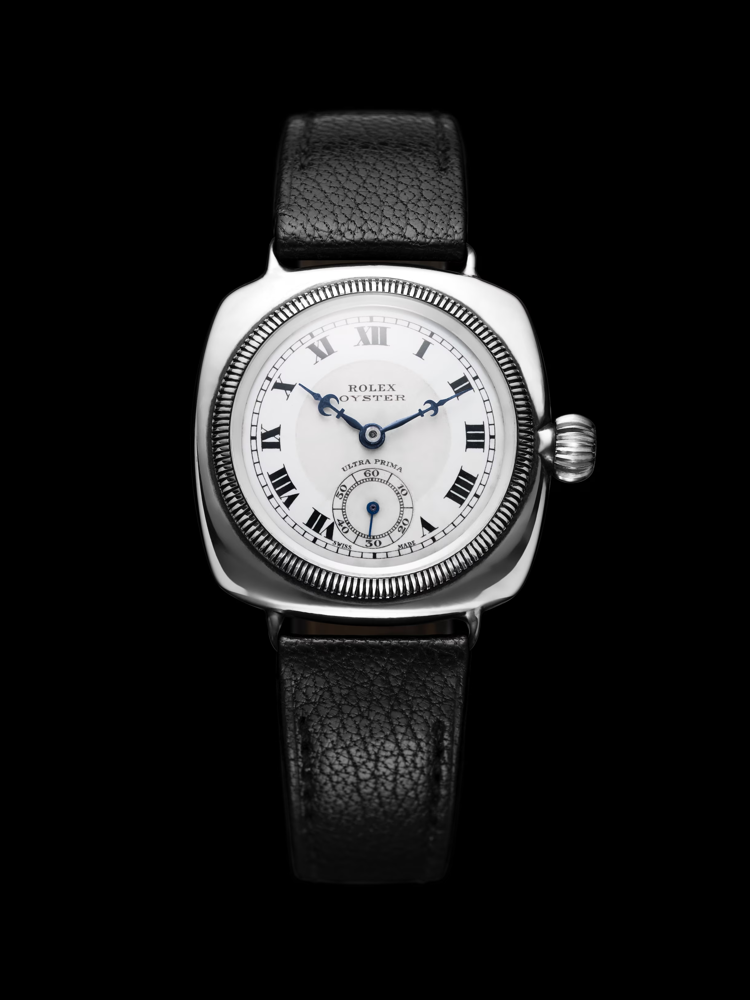
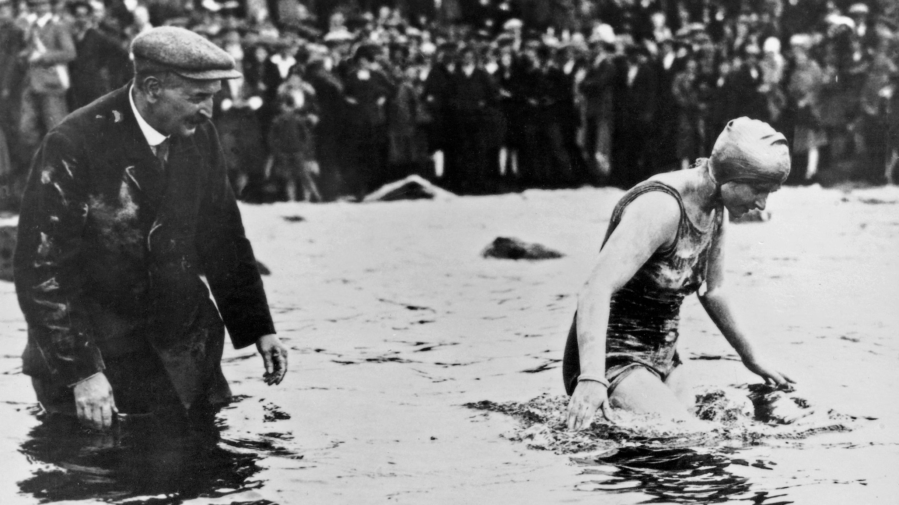
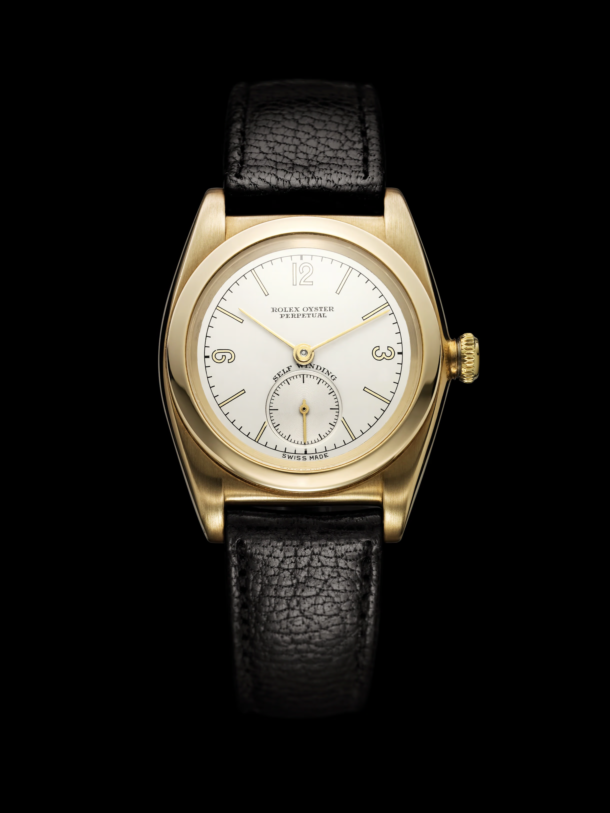

Desde sua criação, em 1905, a Rolex tem empreendido uma busca que, ainda hoje, reúne as
competências
de muitos indivíduos e exige um trabalho árduo, dia após dia, ano após ano. Um caminho exigente, rigoroso e
perpétuo. A busca pela excelência.

Nascido no ano de 1881 na Bavária, Hans Wilsdorf cresceu numa época em que os
relógios
eram feitos para serem guardados no bolso. Na época com 24 anos, fascinado pelos mecanismos dos relógios
e
pela precisão que eram capazes de oferecer, o jovem identificou exatamente onde poderia criar um
diferencial. Ignorando as
desconfianças dos seus colegas, decidiu pagar para ver e iniciou um projeto de fabricar um relógio
verdadeiramente moderno, que refletisse as exigências do século XX.
O começo no ramo da relojoaria
Em 1905, ele começou a trabalhar com um pequeno relojoeiro suíço de Bienne que fabricava
mecanismos excepcionalmente compactos. Hans Wilsdorf decidiu colocar esses mecanismos em caixas de relógios,
o que levou à criação da sua própria relojoaria. Assim teve início a grande obra à qual ele dedicou toda a
sua vida.
Bienne logo se transformou no pilar central da marca e não tardou muito até que o pequeno fabricante fosse
incorporado à Rolex, onde se consolidou como a engrenagem central responsável pela produção de mecanismos
superlativos.
A busca da precisão cronométrica
Em 1910, a empresa recebeu o primeiro certificado de precisão cronométrica concedido a um
relógio de pulso pelo Official Watch Rating Centre de Bienne, na Suíça.
O próximo passo foi o reconhecimento internacional. O nível de precisão dos primeiros modelos da marca era
tão alto que recebeu, em 1914, o cobiçado certificado de precisão “Classe A” atribuído pelo Kew Observatory
de Londres. Até então, essa distinção era reservada essencialmente aos cronômetros da marinha, na época
considerados os relógios mais precisos. A conquista de um tal padrão de precisão em um mecanismo que cabia
numa caixa de relógio de pequenas dimensões constituiu uma imensa contribuição para o setor de relojoaria.
Na época, Hans Wilsdorf não tinha nem 30 anos.
Uma verdadeira paixão pela
bienfacture
A Rolex não tardou a conquistar renome. Em 1919, Hans Wilsdorf decidiu transferir
definitivamente a sede da empresa para Genebra – onde, graças a sua característica habilidade para inspirar
outras pessoas, conseguiu convencer os melhores artesãos e engenheiros do setor de relojoaria a trabalhar
com a Rolex. Em 1931, foi criado o símbolo da coroa com cinco pontas.
Até hoje, o nome Rolex é associado a este emblema, representando perfeitamente a maneira como Hans Wilsdorf
motivava seus funcionários: “Que o resultado do seu trabalho seja belo.”
Hans Wilsdorf era um líder brilhante, que alimentava o desejo otimista de estimular a confiança de seus
técnicos para que superassem os limites. Essa é uma aptidão que ele próprio explicava da seguinte maneira:
“A Rolex deverá sempre se esforçar em agir e enxergar diferentemente dos outros! É o meu ponto forte, agir
desta forma.”
"Não importa o nível de engenhosidade presente em um mecanismo. Para que ele possa
operar de maneira
impecável, a fabricação do relógio precisa ser perfeita."
Hans Wilsdorf

Experiências que validam a inovação
O lançamento, em 1926, do emblemático Rolex Oyster, o primeiro relógio de pulso impermeável do
mundo, foi um marco muito importante para a indústria.
Com esse modelo, Hans Wilsdorf confirmava sua visão de que os avanços alcançados na ciência e na tecnologia
abririam as portas para novas gerações ávidas por aventuras. Em 1927, a jovem nadadora Mercedes Gleitze
conquistou renome mundial ao se tornar a primeira mulher britânica a atravessar o Canal da Mancha, equipada
com um Oyster. Essa extraordinária atleta foi a primeira Embaixadora da marca, abrindo caminho para centenas
de esportistas, exploradores e artistas eminentes que, com suas excepcionais realizações, personificaram a
excelência da marca Rolex.

"Como uma ostra, o relógio pode permanecer por um tempo indeterminado debaixo d’água, sem danos
para suas peças."
Hans Wilsdorf
Elaborar e comunicar
Em 1931, foi lançado o Oyster Perpetual, primeiro relógio de pulso automático da empresa. Seu
funcionamento dependia unicamente dos movimentos do pulso, graças ao rotor Perpetual com o qual vinha
equipado.
Hans Wilsdorf insistia para que cada novo relógio que saísse de suas fábricas fosse um embaixador de
qualidade. Para esse grande empresário, o marketing não deveria ser apenas uma ferramenta para estimular as
vendas, mas sobretudo um meio de divulgar a integridade da marca. “Nossas realizações passadas contribuem
para reafirmar minha fé no futuro e reforçar a certeza de que a marca Rolex saberá mostrar que merece o
renome e a posição conquistada no mundo todo”, declarou Hans Wilsdorf. Seu objetivo era construir uma
identidade à altura da qualidade dos produtos e, inversamente, oferecer produtos que honrassem,
invariavelmente, o nome da marca.

"Nossas realizações passadas contribuem para reafirmar minha fé no futuro e reforçar a certeza de
que
a marca Rolex saberá mostrar que merece o renome e a posição conquistada no mundo todo."
Hans Wilsdorf
"Inovador por definição
A empresa celebrou seu 40.° aniversário em 1945, com o lançamento do Rolex Datejust. Trazendo a
indicação da data em uma janela no mostrador, o modelo se tornou um símbolo absoluto de prestígio, conhecido
mundialmente.
Onze anos mais tarde, em 1956, a marca provou mais uma vez seu compromisso com a inovação quando lançou o
Day-Date, o primeiro relógio de pulso com cronômetro de corda automática e impermeável, que exibia a data e
o dia da semana por extenso em duas aberturas diferentes.
"As datas e os dias são essenciais."
Hans Wilsdorf
O dom do tempo
O maior legado de Hans Wilsdorf foi o “belo trabalho” que serviu de base para a construção do
sucesso da empresa, bem como os princípios que defendia para ampliar as fronteiras do possível,
abrangendo
todos os setores em que até hoje se manifestam os interesses da marca – desde a fabricação de relógios
até o
patrocínio de Embaixadores e parceiros que buscam alcançar a excelência em tudo o que fazem.
Ao deixar sua visão do mundo como herança para a Rolex, Hans Wilsdorf instaurou um senso profundo de
continuidade e uma rara valorização do trabalho no longo prazo, em um mundo dominado pelo imediatismo.
Essa
visão está presente em cada relógio Rolex – concebido para durar.
Hans Wilsdorf faleceu em 1960, mas seu espírito permanece vivo nos valores atemporais legados à Rolex.
Refletindo eternamente os ideais do fundador da empresa, esses valores permanecem vivos. São atemporais.
Ao longo do tempo, a fabricação de relógios passou a representar para ele muito mais que uma fonte de
negócios: ao buscar a perfeição, Hans Wilsdorf procurava também abrir novas possibilidades para a
humanidade
e compartilhá-las. Seu desejo passou a ser de construir um mundo melhor.
Desde então, o legado de Hans Wilsdorf vem se perpetuando, ganhando um caráter atemporal que se reflete
em
seus relógios automáticos. Para ter certeza de que seu propósito se tornaria realidade, o empresário
determinou que os rendimentos gerados pela Rolex fossem constantemente investidos em projetos voltados
para
as gerações futuras.